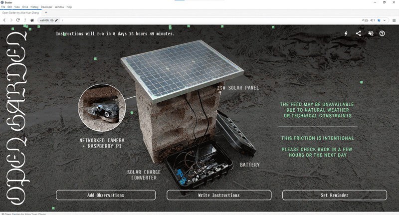
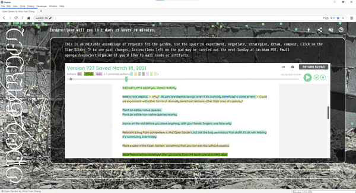
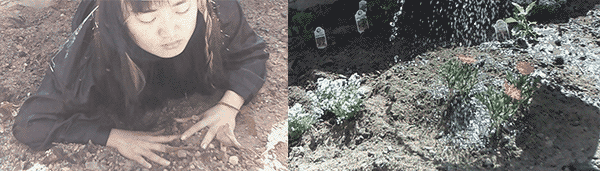

In Conversation with Alice Yuan Zhang
February 6, 2023
Alice Yuan Zhang 张元 is a Chinese-American media artist, researcher, and cultural organizer. Her transdisciplinary practice operates on cyclical and intergenerational time. Along the peripheries of colonialist imagination, she works to bring technology down to earth by devising collective experiments in ancestral remembering, interspecies pedagogy, and networked solidarity. She is the co-founder of virtual care lab, a series of creative experiments in remote connection, and currently teaches Solidarity Infrastructures at the School for Poetic Computation.
Open Garden (2021), a site-specific durational performance by Alice Yuan Zhang, is located in her backyard in Los Angeles. The garden’s slow daily activities are live-streamed to the project website, which is hosted collectively by visitors without a central server. Remote participants are invited to write instructions which the artist carries out each weekend. Collaborator Bhavik Singh wrote a technical overview that unveils decentralization as a conceptual aspiration that may not be entirely realizable across the project’s inner workings. “A decentralized version of the website is one where each of its components relies on a community-powered network,” he states. “If achieved, the website itself becomes a garden — a slow-moving, interdependent network that supports itself.”

Web View of Open Garden (2021)
MAHM: Let's begin with Open Garden, and how it creates relationships between the website hosted collectively and the garden site hosted by you. This project took place two years ago now. Looking back, have your ideas about the project remained consistent over the course of your ongoing research?
AYZ: This project keeps coming up the deeper I get into looking at tech infrastructure, and it feels prescient for this continued part of my practice. The project was set up as a question and as a space to look at attention — the attention we spend online and the agency that can or can't come with that attention. There are instructions that people can navigate through Etherpad. With the time slider and the authorship colors that Etherpad offers, people would negotiate and cut into each other's sentences and ask like, “Why do you want worms to be added to the garden?” and explore what it means to be both passersby as well as stewards. And then there's the performing, which is both me and the garden (which is a very stubborn performer) [laughs]. It's going to do what it wants to do, and it's not really taking cues. I'm the one who's taking cues. What can you possibly instruct from far away, and how can you think about locality in the context of a relationship? Open Garden as a performance reflects on the non-obvious dependencies which sustain our current media ecosystem and continue to be overlooked amidst visions of decentralization. What is the labor that's obscured, but also the power dynamics and material context that we presume to know or accept without knowing? What can only happen in person, and what is the role of the body in relation to network infrastructure?
It's so strange to be online these days, a lot of things feel uncomfortable, so what kind of connections should be facilitated through networked media? The other question is about interspecies relationships, the Anthropocene condition, and how to re-relate from an ecological standpoint. Those two questions come together around the focal point of remediation.

Public Instructions for Open Garden (2021)

Stills from performance
MAHM: You were also able to find “Server Friends” along the way who are asking similar questions. There’s a great line on your website that says, “I am a living and growing constellation of my knowledge lineage,” along with your list of people. What other projects or frameworks have been in your constellation as you’ve unpacked the myths of web3 and looked toward more care-based practices?
AYZ: I have always been interested in the ecological lens. I've used different mediums like augmented reality and 3D to look at those questions through storytelling and work about cultural memory. That led to being more critical of the mediums themselves and the materiality of computing. And then, I got to be more interested in the details of tech infrastructure and looking at servers. Beyond Web3, decentralization has a long history of experimentation that is more grassroots and projects that continue to go on that can be understood as peer-to-peer. The recent cultural phenomenon around Web3 was not conducive to relational and care-based principles of connecting through media and ecologically. That always felt like a back-end inconvenience to think about. Meanwhile, I was looking for infrastructural practices that foundationally challenge the material and labor dependencies of computing. Like, who is serving the server? What are the dependencies of that? Can we make space for criticality? And also to practice being digital stewards or data stewards and maintaining tools for not just yourself but collective people in a community context. How can technology be a relational practice?
In my research last year, I came across Moxie's article, “My first impressions of web3.” Moxie worked on Signal, so obviously, he is a pretty big voice in this alternative network infrastructure space. But he said, “people don't want to run their own servers, and never will,” as an explanation of how centralized platforms came up. That really struck me as this pressure point, this challenge. Hacker culture can often be very individualistic and white male-dominated. Rather, can we reframe server hosting as a community endeavor, as an extension of radical organizing and care-based artistic practices?
That's when I started to look for examples of how people have already been practicing infrastructure differently. Artists have hosted feminist servers with this attitude of not always being available. Protesters have set up mesh-on-the-go between their phones under internet shutdowns. Migrant communities know how to take care of each other intimately in order to survive systemic precarity. These are the “emerging technologies” we need to immerse in rather than whatever the VC gods prescribe next.
MAHM: I’m happy that we’re talking about hosting as a collective endeavor and that the person reading our conversation will be generating the website from one of the Solar Protocol servers, stewarded by someone in the network. It comes back to “who serves the server.”
I do want to get deeper into the ecological lens in your practice. One of the ways you’ve talked about this ecological framework is through embodiment. I've actually revisited Shannon Mattern’s talk “Everything Is Infrastructure” because I saw it in your “Network Doula Library” Are.na channel as I was preparing for our chat. In Shannon’s talk, she asks:
What are the potentials for knowing the infrastructure if we become the infrastructure? What are the potentials for knowing objects by imaginatively becoming those objects, by interacting with the various other objects with which they come into contact?
AYZ: Yes! I don’t remember if this is where the name came from, but I did end up titling my whole research process last year, “Becoming Infrastructure.”
MAHM: You went to the extent of scanning yourself, developing a self-portrait on the web, and reframing your anatomy as a router apparatus.
AYZ: My body! Literally. [laughs]
AYZ: In Shannon’s piece, she notes how our devices only seem to be untethered. It invisibilizes the entanglements that we're under. You know, like the fake palm trees that are just hiding antennas in the cities. I have always looked to embodiment as an honest way of learning, of sensing. I explored a lot of facilitation through virtual care lab for connecting remotely through the screen, working with limited signals, and exploring how to find intimacy with each other like this. That informed my approach later on to challenging tech infrastructure. I would always do this grounding exercise I call an ecosystemic body scan–to sense each other in our actual full bodies and allow for more space for our experience and connection. We would bring our attention from the top of the head all the way through the limbs and body down to the feet and then also imagine extending roots out from the bottommost part of the body, into and beyond the physical structures that we live in. And we find soil and extend those roots across the planet to where we come from and where our roots are. Then, imagine extending those roots out to everyone else in this shared space and experiencing in a very real, tangible way how we are connected.
Anatomy of an Intergenerational Router (2022) is a portrait of the many ways my body interfaces with the world across time and place, across generations. Aesthetically, I was able to take a 3D scan of my body when working on this in Berlin. It felt so strange to capture the body in that way. Then I added the 3D elements of the roots onto the base of the body to allude to the ecosystemic body scan I had been hosting so many iterations of… That word is so interesting in the context of this, actually. [laughs]
MAHM: “Host” is a loose term here, but in a productive way.
AYZ: Yea, Woah. It’s nice to bring together the context of hosting a server with hosting as a facilitator.
It comes full circle in the way that, like, my inquiry is not really about technology. It has always been about what we need to live. And the work is not about building but healing. In my artistic practice, I’ve always thought of myself as a host, even before becoming interested in tech infrastructure. I love to bring people together, bridge ideas and spaces, and be a conduit for cultural and ecological memory. It goes back to what Melanie Hoff says about how we are “always already programming” by simply having interacted with computers. So likewise, how are we “always already infrastructuring”?
MAHM: I love the concept of always already infrastructuring. I want to weave in a question that Austin Wade Smith posed. They asked, “Is there such a thing as a technology that cultivates and proliferates new forms of intimacy, kinship, and situatedness entanglement?”
In that context, we were talking about different ways of thinking about the internet without a one-size-fits-all answer. For example, we talked about how we need a Solar Protocol version, a stable version, where the website is accessed like a baton being passed around the world, but also how we need a Feral.Earth version, where a network operates on a planetary rhythm and isn’t always available.
AYZ: I think something like Feral.Earth is helpful for getting folks used to a different set of expectations with software, one that is more in line with earthly affordances. I don't know if the technology itself ever cultivates intimacy and kinship. I mean, maybe to facilitate or even amplify it, but intimacy ultimately requires human intention. In the experiments we had done over two years at virtual care lab, we often deliberately fought against the usual platforms and how they design onto us an expected way of connection. For example, during one gathering called Sites of Passage, the artist Lucy Kerr had participants put Vaseline on the webcam, which made all the video feeds fuzzy. That invited intimacy by subtraction of data.
Also relevant is a project I did with Bhavik Singh called 1:1 Protocols for Remote Connection. Each day for two weeks, we came up with a different way to send a signal to each other that day, which could be digital or analog or even via the astral plane. The intimacy that comes from the exercise is from the intentionality of choosing the medium. It’s like, are we being creative in how we decide to reach out to each other? That meant more to us than anything.
If you focus on needs and are expansive and creative about what you want to use, you begin to hack your way toward collective agency. Then you realize that your real teachers are whole communities who have been trying to communicate, as I mentioned, under protest or emergency. That's where that experimentation has already been happening toward what is already responsive and adaptive. Like Helga Tawil-Souri’s paper about a speculative pigeon network in the Gaza Strip. The situatedness, in that context, is you're under these political and economic conditions that are very limited, so you have to figure out other ways of communicating. That's actually where we can learn from and then figure out what our own community contexts need. Then I think the decentralization is actually a matter of weaving, translatability, and accessibility between these autonomous possible ways of connection.
MAHM: I’m curious if what comes to mind as you're processing Anthillhacks with regard to this conversation. For those who aren’t familiar, Anthillhacks is an annual gathering in Tumkur, India, for people to investigate Wi-Fi mesh networks, their potential, and their ability to reframe what technology means in rural environments. Alice, you helped construct a bamboo tower to be a node in the “COW Mesh,” or Community Owned and/or Operated Wireless Mesh. You described our experience at Anthillhacks as being “between COWmesh and Peoplemesh” and living close to the soil.
AYZ: There is all of that locality in the material and the facilitation of it. For example, the Libre router, where did that come from? Not every component was local, but there is the possibility of hacking, or “jugaad.” In Manuch’s workshop, we got to experience the joy of zapping together a line of battery cells into series to make a power bank, but how do these batteries get to the electronics market in Bangalore in the first place? In another moment, we discussed China having a stronghold on the semiconductors market. It’s important to acknowledge the supply chain dependencies. When we talk about open hardware, how much of that is open, really? In terms of economics, people sometimes want to connect to the internet to find jobs to leave their village. Does access to the internet have to feed the growth of neoliberal markets? What can agency look like in that sense? I’m glad we were able to reflect on these very complexities at Anthillhacks. Meanwhile, what does it mean for me to be back in Los Angeles with all of its over-investment into technologies of bias and control? Literally, coming back from a village where we're setting up the first mesh tower in that area to connect with the mountain and being dumped in an immersive set of floor-to-ceiling LEDs that are emitting so much heat. How do we work with this different set of challenges while drawing from the same principles toward healing?
MAHM: There's so much to go further into. I guess that will continue with Max in our Solidarity Infrastructures class at the School for Poetic Computation.